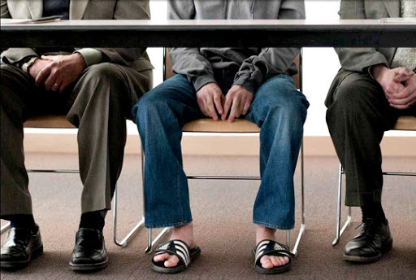

Sean Parker is the lancer, in the sense that he challenges the "hero" of the story. Since this story
doesn't have a traditional hero, however Mark and Eduardo both exhibit some hero traits, Sean challenges
their worldview and is what initially splits them apart (although one can see that conflicting ideologies would
always have divided them). Sean forces Mark to accept that he wants a billion dollars not a million, which is a bird in
the bush when Eduardo is much more keen on a bird in the hand. Sean is charismatic, very much so, but has none of
the other traits of a hero: he cannot unify a team and he cannot lead the action of the story.
